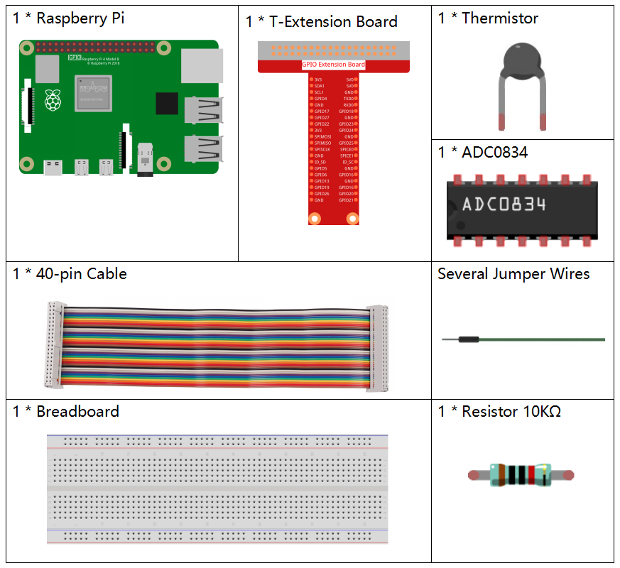

Nota
¡Hola! Bienvenido a la comunidad de entusiastas de SunFounder para Raspberry Pi, Arduino y ESP32 en Facebook. Únete a otros entusiastas para profundizar en Raspberry Pi, Arduino y ESP32.
¿Por qué unirse?
Soporte de expertos: Resuelve problemas postventa y desafíos técnicos con la ayuda de nuestra comunidad y equipo.
Aprende y comparte: Intercambia consejos y tutoriales para mejorar tus habilidades.
Vista previa exclusiva: Obtén acceso anticipado a anuncios de nuevos productos y adelantos.
Descuentos especiales: Disfruta de descuentos exclusivos en nuestros productos más recientes.
Promociones festivas y sorteos: Participa en sorteos y promociones de temporada.
👉 ¿Listo para explorar y crear con nosotros? Haz clic en [Aquí] y únete hoy mismo.
2.2.2 Termistor
Introducción
Al igual que el fotoresistor puede detectar la luz, el termistor es un dispositivo electrónico sensible a la temperatura que puede usarse para funciones de control de temperatura, como la creación de una alarma de calor.
Componentes necesarios
En este proyecto, necesitamos los siguientes componentes.
Diagrama Esquemático


Procedimientos Experimentales
Paso 1: Monta el circuito.

Paso 2: Ve a la carpeta del código.
cd ~/davinci-kit-for-raspberry-pi/python-pi5
Paso 3: Ejecuta el archivo ejecutable.
sudo python3 2.2.2_Thermistor.py
Cuando el código se ejecute, el termistor detectará la temperatura ambiente, que se imprimirá en la pantalla una vez finalizado el cálculo del programa.
Advertencia
Si aparece un mensaje de error RuntimeError: Cannot determine SOC peripheral base address, consulta Si gpiozero no funciona.
Código
Nota
Puedes Modificar/Restablecer/Copiar/Ejecutar/Detener el código a continuación. Pero antes de eso, debes ir a la ruta del código fuente, como raphael-kit/python-pi5. Después de modificar el código, puedes ejecutarlo directamente para ver el efecto.
#!/usr/bin/env python3
# -*- coding: utf-8 -*-
import ADC0834
import time
import math
# Inicializa el módulo ADC0834
ADC0834.setup()
# Ejecuta el proceso en un bloque try-except
try:
while True:
# Lee el valor analógico del sensor
analogVal = ADC0834.getResult()
# Convierte el valor analógico a voltaje
Vr = 5 * float(analogVal) / 255
# Calcula la resistencia del termistor
Rt = 10000 * Vr / (5 - Vr)
# Calcula la temperatura en Kelvin
temp = 1 / (((math.log(Rt / 10000)) / 3950) + (1 / (273.15 + 25)))
# Convierte Kelvin a Celsius
Cel = temp - 273.15
# Convierte Celsius a Fahrenheit
Fah = Cel * 1.8 + 32
# Imprime la temperatura en Celsius y Fahrenheit
print('Celsius: %.2f C Fahrenheit: %.2f F' % (Cel, Fah))
# Espera 0.2 segundos antes de la próxima lectura
time.sleep(0.2)
# Maneja KeyboardInterrupt para una terminación suave
except KeyboardInterrupt:
# Limpia los recursos de ADC0834
ADC0834.destroy()
Explicación del Código
Este segmento importa la clase PWMLED de la librería gpiozero, necesaria para controlar los LEDs PWM. También incluye el módulo ADC0834 para la conversión de analógico a digital y el módulo de tiempo para ejecutar funciones basadas en tiempo, como sleep.
#!/usr/bin/env python3 # -*- coding: utf-8 -*- import ADC0834 import time import math
Inicializa el módulo ADC0834 para permitir la lectura de valores analógicos.
# Inicializa el módulo ADC0834 ADC0834.setup()
Implementa un bucle infinito para la lectura continua de datos. El bucle lee el valor analógico de un termistor, lo convierte a voltaje, calcula la resistencia del termistor y luego traduce esta resistencia en medidas de temperatura en Kelvin, Celsius y Fahrenheit. También imprime las lecturas de temperatura en Celsius y Fahrenheit, con una pausa de 0.2 segundos entre cada lectura.
# Ejecuta el proceso en un bloque try-except try: while True: # Lee el valor analógico del sensor analogVal = ADC0834.getResult() # Convierte el valor analógico a voltaje Vr = 5 * float(analogVal) / 255 # Calcula la resistencia del termistor Rt = 10000 * Vr / (5 - Vr) # Calcula la temperatura en Kelvin temp = 1 / (((math.log(Rt / 10000)) / 3950) + (1 / (273.15 + 25))) # Convierte Kelvin a Celsius Cel = temp - 273.15 # Convierte Celsius a Fahrenheit Fah = Cel * 1.8 + 32 # Imprime la temperatura en Celsius y Fahrenheit print('Celsius: %.2f C Fahrenheit: %.2f F' % (Cel, Fah)) # Espera 0.2 segundos antes de la próxima lectura time.sleep(0.2)
Captura una excepción de KeyboardInterrupt para terminar el programa de manera ordenada e incluye instrucciones de limpieza para los recursos del ADC0834 al finalizar.
# Maneja KeyboardInterrupt para una terminación suave except KeyboardInterrupt: # Limpia los recursos de ADC0834 ADC0834.destroy()